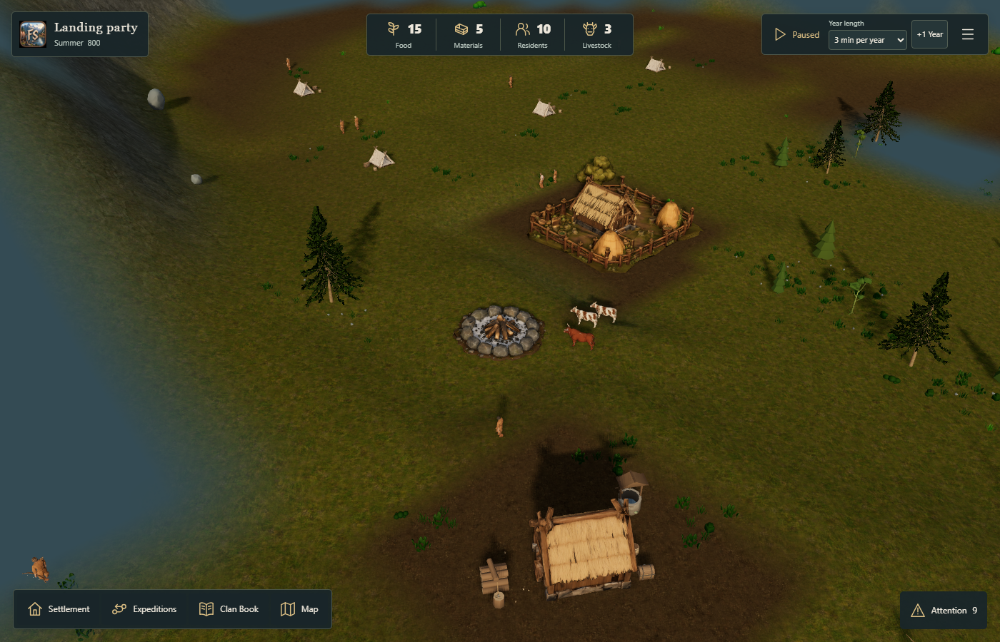
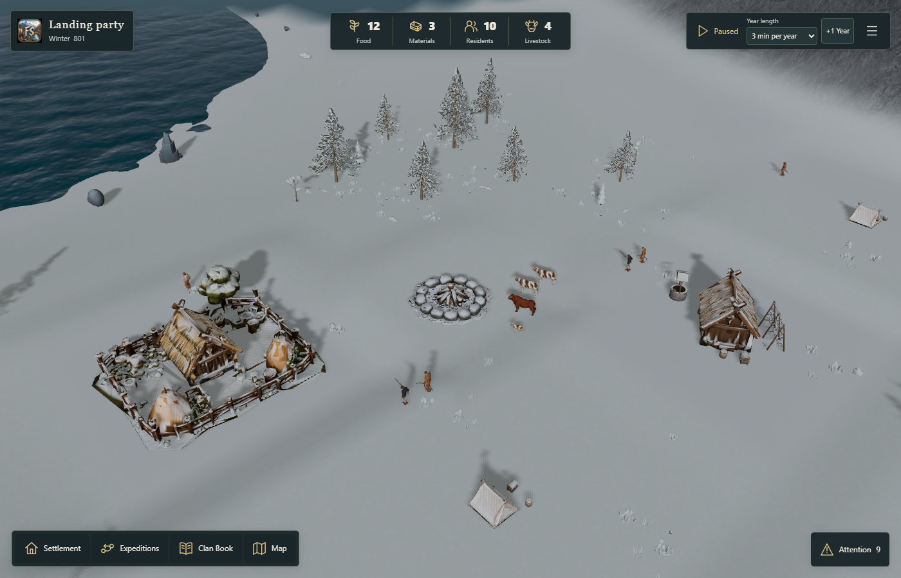
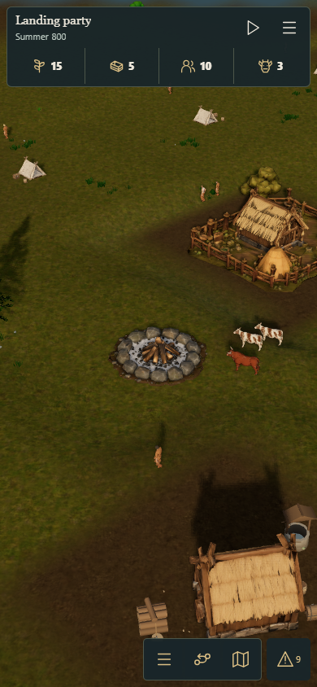

Paid village · Summer · Standard


Matched current-main campaigns before and after the refactor. Exact fixed-time state and pixels match on this Windows Edge host. Physical iOS review remains pending. This is a maintainability change, with no frame-rate improvement claim.
Evidence and reproduction · Desktop equality · Mobile equality · Lifecycle probes · Actual controls · Open FjordSide





Please review loading/import, pause/background return, selection/camera, native wardrobe, paid houses, map/mission controls and edits on a physical iPhone/iPad. The PR remains draft for normal review; nothing is merged automatically.